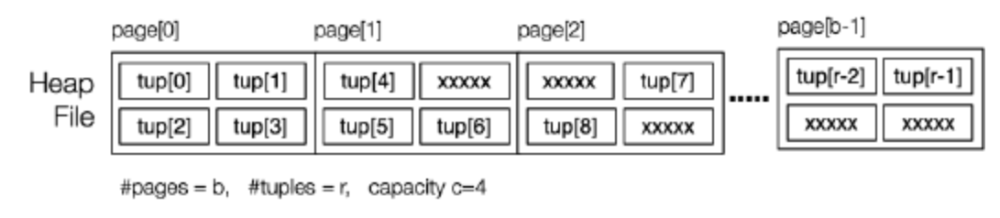

Chapter 1
Chapter2: Operations in PostgreSQL
DBMS Architecture

这章我们关注的是Relational Operators 和 Access Methods
Relational Operations
DBMS的核心就是 relational engine, 用以实现:
- selection, projection, join, set operationsscanning, sorting, grouping, aggregation, ...等逻辑操作
这章会深入研究每种操作的实现方法, 为每种实现开发相应的成本模型, 并对每种方法何时最为有效进行特征化
我们从两个维度定义了查询方法:
- 关系逻辑操作 (Relational Operation): 比如是 SELECTION, PROJECTION 还是 JOIN 等
- 访问方式 (Access Method): 定义了文件结构，是索引式 (Indexed)，哈希 (Hashed) 等
对于查询方法, 我们最关心的就是该查询方法的代价(Cost), 因此我们需要定义一个Cost Model
Cost Model
正如前文所述, 我们关心不同查询方法的代价(Cost); Cost由两部分组成:
- Time cost：执行该查询方法所用的总时间
- 但是在实际运行中Time cost受到许多因素干扰, 如硬件, 所以我们更关注Page cost
- Page cost：执行该查询方法过程中读写的总 page 数量
- 但是Page cost受到Buffering 的影响如有多上个buffer, 选择了什么 Replacement Strategy
- 因此, 再计算Page cost时我们粗略的估计每次读/写/更新操作都会直接与 Disk 进行, 不考虑有Buffer的情况
在了解了Cost Model之后, 我们看看分析每个关系逻辑操作
Scanning
这一节我们来看看Scanning, Scanning是指对数据库中的数据进行逐行遍历的操作, 如**select** ***** **from** Rel;
我们考虑两种情况, 一种是没有Overflow pages, 一种是有Overflow pages
没有Overflow Pages
我们先看看没有Overflow pages 的文件结构(File Structure):
Scanning操作是扫描所有 page 中的所有 tuple, 代码如下
for each page P in file of relation Rel {
for each tuple T in page P {
add tuple T to result set
}
}
这里的Cost = Number of all pages = b
接下来考虑有Overflow pages 的情况
有Overflow Pages
我们先看看有Overflow pages 的文件结构(File Structure):

简易的思路就是:
- 先遍历一个Page 里面所有的Tuple, 然后检查这个Page 有没有Overflow pages, 如果有, 遍历Overflow page, 在检测该Overflow pages有没有Overflow pages, 代码如下:
for each page P in file of relation Rel {
for each tuple T in page P {
add tuple T to result set
}
for each overflow page in page {
for each tuple in overflow page {
add tuple T to result set
}
}
}
这里的Cost = Number of all pages + Number of all overflow pages = $b + b_{ov}$($b_{ov}$是Overflow pages的总数)
到现在我们考虑的都是全扫描的情况, 但是如果不是全扫描, 扫描到特定的Tuple 就不需要再扫描了, 这就是一个条件查询, 如SELECT * FROM Employee WHERE id=762288; (需保证结果只有一个)
我们先看看该条件查询的文件结构(File Structure):

- $r9$代表待查询的Tuple
建议思路就是:
- 查询Page里面所有的Tuple, 直到找到 $id == 762288$, 代码如下
for each page P in relation Employee {
for each tuple t in page P {
if (t.id == 762288) return t
}
}
这里Cost就需要分三种情况了, 因为不知道Tuple 存储在那个Page里面:
- 最坏的情况 (Worst Case): 完全扫描/找不到答案, 或者答案在最后一个page里, $Cost = b$
- 最好的情况 (Best Case): 一发击中, $Cost = 1$
- 平均情况 (Average Case): 平均扫描半数的 page, $Cost=\frac{b}{2}$
对于上述的扫描，我们一般都需要使用迭代器 (Iterator) 来实现
关于Scan的迭代器Iterator
- Scan s = start_scan(Relation r, ...)
- 表示开始扫描关系
r, 可以添加一些条件，比如WHERE语句
- 表示开始扫描关系
- Tuple next_tuple(Scan s)
- 紧接着上次访问的内容返回下一个
Tuple, 如果关系中不再有Tuple，则返回NULL, 示例代码如下:
- 紧接着上次访问的内容返回下一个
Tuplenext_tuple(Scan s)
{
if (s->curTID>= nTuples(s->page)-1) {
// get a new page; exhausted current pages->curPID++;
if (s->curPID>= nPages(s->rel))
return NULL;
else {
s->page= get_page(s->rel, s->curPID);
s->curTID=-1;
}
}
s->curTID++;
return get_tuple(s->rel, s->page, s->curTID);
}
下面的例子用于使用迭代器来实现 SELECT name FROM Employee
DB db = openDatabase("myDB");
Relation r = openRelation(db,"Employee",READ);
Scan s = start_scan(r);
Tuple t; // current tuple
while ((t = next_tuple(s)) != NULL) {
char *name =
getStrField(t,2);
printf("%s\n", name);
}
Scan实际上是一个指向 Structure Scandata 的指针，这个 Structure 保存一些进行扫描的关键信息, 示例代码如下:
typedef ScanData *Scan;
typedef struct {
Relation rel;
Page *curPage; // Page buffer
int curPID; // current pid
int curTID; // current tid
} ScanData;
在Select语句中, 还有一个语句是 CREATE TABLE T AS (SELECT * FROM S); , 其中需要把 Table 中的数据全部复制给一个新的 Table, 这就涉及到了Relation copy的操作
Relation Copying
对于该语句 CREATE TABLE T AS (SELECT * FROM S); , 它的实现代码如下:
make empty relation T
s = start scan of S
while (t = next_tuple(s)) {
insert tuple t into relation T
}
其中新的 $Table\ T \le Table\ S$, 其原因是Table S 的 Pages 中，可能会有一些 Tuple 被删除了, 而在Copying 的过程中, 是不断的向新的Tuple T 进行append Tuple, 因此会使新的Table 变得比较紧密(Compact)
上述的示例只适用于heap files, 即:
- 简单、无序、可能有索引、没有散列
PostgreSQL中的其他访问文件结构有:
- btree, hash, gist, gin
在了解完Scanning这个关系逻辑操作之后, 我们将会在下一节看看Sorting 这个关系逻辑操作
Sorting
在使用SQL查询时, 可以使用 ORDER BY 来显示使用排序操作, 也有在某些操作中隐式使用排序, 比如:
- 消除重复的元组以进行 projection
- 对文件排序以提高 SELECT 效率
- 实现各种风格的 JOIN
- 使用 GROUP BY 来进行聚合
存在两种数据的存储位置
- 内存
- 内存中的数据可以直接访问, 并且内存通常具有较高的读写速度, 所以我们可以使用快速排序等排序算法
- 磁盘
- 在磁盘上对大量数据进行排序, 可能会导致频繁的磁盘读写操作, 效率低下, 所以我们需要External sort, 如Merge sort
操作如下:
- 在每个Page 内部进行排序
- 之后再两两归并
那么最少需要3个 in-memory buffer

我们假设在内存中，两个 buffer 的合并操作的代价约为 0
在Merge 中, 我们需要不断地比较两个Tuple, 代码实现如下:
int tupCompare(r1,r2,f)
{
if (r1.f < r2.f) return -1;
if (r1.f > r2.f) return 1;
return 0;
}
- 返回值:
- -1: r1在r2之前
- 1: r1在r2之后
- 0: 相等, 位置不变
复杂情况我们需要基于多个属性 (attributes) 来进行对比, SELECT * FROM students ORDER BY age desc, year_enrolled; 代码如下:
int tupCompare(r1,r2,criteria)
{
for each (f,ord) in criteria {
if (ord == ASC) {
if (r1.f < r2.f) return -1;
if (r1.f > r2.f) return 1;
}
else {
if (r1.f > r2.f) return -1;
if (r1.f < r2.f) return 1;}
}
return 0;
}
- f: 属性
- ord: 排序顺序(ASC 或 DESC)
- criteria: 每个属性以及对应的排序顺序
接下来我们对Sorting 的 Cost 进行分析
Cost Analysis
- Cost of Two-way Merge Sort
- $2 * b * ceil(log_2(b))$
- b: a file containing
bdata pages
- b: a file containing
- $2 * b * ceil(log_2(b))$
- Cost of n-way Merge Sort
- $2 * b * (1 + ceil(log_n(b_0)))$
- $b_0$: b_0 = ceil(b / B)
- B: uses
Btotal buffers - n: n = B - 1
- $2 * b * (1 + ceil(log_n(b_0)))$
Projection
接下来我们来看看一个比较重要的逻辑关系操作Projection , Projection就是从关系中选择特定的列或属性, 如 select distinct name,age from Employee; , 从employee中选择name属性和age属性
大概步骤如下:
- 扫描整个关系
- 在输出中移除不需要的属性
- 基本上是创建一个具有较少属性的新元组，其中的值可以从现有属性中计算而来。
- 消除生成的任何重复项(如果有
DISTINCT关键字), 有两种方法:- sorting
- hashing
我们需要一个 Tuple projTuple(AttrList, Tuple) 函数帮助我们, 参数为
- 属性列表
- 包含这些属性（以及更多属性）的元组
输出为:
- 一个目标属性列表
对于 Projection 的实现, 有两种实现, 第一种是without distinct, 第二种是with distinct
Implementation Without Distinct
如果不需要去重, 那么Projection 操作就变得很简单, 步骤如下:
- Scan pages
- 使用projTuple 函数将对应的attribute 放入新的projected_tuple 变量里
- projected_tuple 将放入输出Buffer
# attrs = [attr1, attr2, ...]
for page in pages(rel):
for _tuple in tuples(page):
projected_tuple = projTuple(attrs, T)
if (outBuf is full):
# write ouput and clear
outBuf.append(projected_tuple)
if nTuples(outBuf) > 0:
# write output
Implementation With Distinct
这个时候的Projection 比之前没有Distinct 的Projection 就多了一个去重操作, 去重操作可以通过 Sort 和 Hash 实现
现在我们来看看使用 Sorting 方法实现的Distinct
Sort-based Projection
基本思路如下:
- Scan pages
- 使用projTuple 函数将对应的Tuple 放入新的变量里
- 对新的变量进行排序
- 遍历新的变量, 如果当前Tuple 与之前的Tuple相等, continue; 如果不相等, 则将该Tuple 存入输出
- 更新之前的Tuple
代码如下:
for each tuple T in Rel {
T' = mkTuple([attrs],T)
write T' to Temp
}
sort Temp on [attrs]
for each tuple T in Temp {
if (T == Prev) continue
write T to Result
Prev = T
}
现在我们来看看这个方法的Cost:
- 扫描原本的 Relation Data File 的所有 Page: bR
- 把符合条件的 Tuple 写入一个临时 Relation: bT
- 对临时 Relation Data File 中的 Tuples 进行排序（使用外部排序算法）: 2*bT *ceil(logn b0 ), b0 = ceil(bT /B)
- 扫描整个排好序的临时 Relation，移除重复 Tuples: bT
- 把结果写入 Result Relation: bOut
$b_R + b_T + 2\times b_T .ceil(log_n{b0} ) + b_T + b_{Out}$
接下来看看基于Hash 的去重
Hash-based Projection
基本思路就是将原Relation 的所有Page 一个一个读入 Buffer，然后根据其中每个Tuple 的内容，使用Hash Function 将其放入众多 Output Buffer 中的一个, 每当Output Buffer 被写满，就将其写入 Disk 的一个 Partition，然后重新向该 Buffer 中添加 Tuples

接下来将每个 Partition (Page) 一个个读入，再次使用一个新的 Hash Function, 那么所有相同的Tuple 会分配到一个Output buffer里. 此时在每个Output Buffer 中都会进行自我扫描, 用于去除重复的 Tuples, 之后写到 Result Page 中, 代码如下:
for each tuple T in relation Rel {
T' = mkTuple([attrs],T)
H = h1(T', n)
B = buffer for partition[H]
if (B full) write and clear B
insert T' into B
}
for each partition P in 0..n-1 {
for each tuple T in partition P {
H = h2(T, n)
B = buffer for hash value H
if (T not in B) insert T into B
// assumes B never gets full
}
write and clear all buffers
}
现在我们来看看这个方法的Cost:
- 扫描原始关系: bR
- 写入分区: bP
- 重新读取分区: bP
- 写入结果关系: bOut
$b_R + 2b_P + b_{Out}$
- 需要 sqrt(bR )+1 个buffers
- 最终得到的结果并不会保证是排序的
有两个特殊情况, 一个是Projection on Primary Key, 一个是Index-only Projection
其中Projection on Primary Key可以不使用上面的方法, 因为主键已经保证了不会有重复, 实现代码如下:
bR = nPages(Rel)
for i in 0 .. bR-1 {
P = read page i
for j in 0 .. nTuples(P) {
T = getTuple(P,j)
**T' = mkTuple(pk, T)**
if (outBuf is full) write and clear
append T' to outBuf
}
}
if (nTuples(outBuf) > 0) write
Index-only Projection 是指数据库系统只需通过索引即可获取查询所需的数据, 完全不需要再访问 Data File
它的Cost 为: $b_i + b_{Out}$
- $b_i$: Index has
b_ipages
对于Index-only, Sort-based, Hash-based projection的对比:
- Index-only projection: 需要一个适当的索引来实现。在有合适索引的情况下，它的性能非常高
- Hash-based projection: 需要缓冲区和良好的哈希函数, 在合适的情况下，它可以比基于索引的方法更有效
- Sort-based projection: 默认情况下使用的方法, 成本相对较高
现在我们结束了SQL里面的Projection 操作, 接下来去看看Selection 操作
Selection
现在我们详细的来看看SQL 操作语句: SELECT, SELECT 操作用于从一个关系 R 中筛选出满足条件 C 的元组子集, 其中C是基于属性值的. 该语句可以实现三种不同类型的选择操作:
- 1维选择(one dimensional): 条件只涉及一个属性
- 多维选择(multi-dimensional): 条件涉及多个属性
- 相似度选择(similarity): 进行近似匹配，并对结果进行排名
为了更有效率地进行 Selection，有几种比较基本的方法:
- 元组的物理排列方式
- 排序（搜索策略）
- 哈希（静态、动态、多维）
- 附加的索引信息
- 索引文件（主索引、辅助索引、树索引）
- 签名（叠加、分离）
由于操作的具体实现与文件结构之间与存在着关系, 特定操作在特定的文件结构中能有很好的性能, 接下来让我们来探究一下
File Structure
Heap File
这里面的Heap不是数据结构中的堆, 仅仅表示一堆 Pages, Heap file 就指:
- 包含 Tuples 的一系列 Pages
- Tuples 没有固定的顺序
- Pages 会有因为删除 Tuples 而遗留下来的空闲空间
- 通常不涉及 Overflow Pages
结构图如下:

3. Operation in Different File Structure
Course: DBMS Implementation (https://www.notion.so/DBMS-Implementation-33f31158f42746dba0a081aaefbe1956?pvs=21) Confidence: Not Confident Last Edited: May 6, 2024 2:35 PM Is Completed: No
File Structure
Heap File
这里面的Heap不是数据结构中的堆, 仅仅表示一堆 Pages, Heap file 就指:
- 包含 Tuples 的一系列 Pages
- Tuples 没有固定的顺序
- Pages 会有因为删除 Tuples 而遗留下来的空闲空间
- 通常不涉及 Overflow Pages
结构图如下:

Selection in Heap File
因为在Heap File 中的Tuple 是无序的, 所以进行Selection 操作的方法是线性扫描(Linear scan), 代码如下:
// select * from R where C
for each page P in file of relation R {
for each tuple t in page P {
if (t satisfies C)
add tuple t to result set
}
}
由于Selection 包含1维选择(one dimensional)(One Type Query), 多维选择(multi-dimensional)(Partial Match Retrieve), 相似度选择(similarity)(Range Queries), 它们的Cost分别如下:
- One Type Query
- Best = 1
- Average = b/2
- Worst = b
- Partial Match Retrieve and Range Queries
- $Cost_{pmr} = Cost_{range} = b$
Insertion in Heap File
Insertion 操作是将一个新的Tuple 添加到Heap File 的最后一个 Page 中
大概步骤为: 读取最后一个 Page，将 New Tuple 加入，将新的 Page 写回 Data File, 代码如下:
rel = openRelation("R", READ|WRITE);
pid = nPages(rel)-1;
get_page(rel, pid, buf);
if (size(newTup) > size(buf))
{ deal with oversize tuple }
else {
if (!hasSpace(buf,newTup))
{ pid++; nPages(rel)++; clear(buf); }
insert_record(buf,newTup);
put_page(rel, pid, buf);
}
它的Cost 为:
$Cost_{insert} = 1_r + 1_w$
还有一种策略是找到有足够空间的任意页面, 最好是已加载到内存缓冲区中的页面, 将Tuple 插入
而在Postgre SQL中, 它的策略更偏向后者但有所不同, 策略如下:
- 使用在 Buffer Pool 中最近被更新 (MRU)的Relation R 的Page
- 如果条件不满足, 在Buffer Pool 里面找一个有足够空间的Relation R 的Page
- 使用 FSM (Free Space Map) 来寻找这样一个满足条件的 Page
我们要考虑一下New Tuple 尺寸比较大的情况:
- 这个时候我们需要一个独立于Data File 的额外 File(比如 PostgreSQL 的 Toasting), 我们会将该属性的值存放在一个额外的 File 中, 而在Tuple 中的对应位置留下一个标记(Marker), 这个标记会告诉系统该属性值存放在额外文件中的哪个位置
我们现在来整体看一下Postgre SQL 的Insertion 操作:
heap_insert(Relation relation, // relation desc
HeapTuple newtup, // new tuple data
CommandId cid, ...) // SQL statement
该函数:
- 找到有足够空间的页面
- 找到对应的 Page 之后，将其加载到 Buffer Pool 并且锁定 (Lock)
- 将 Tuple 数据复制到 Page 中, 设置 xmins(xmins表示该 Insertion Transaction 的开始时间，这对于 MVCC 来说是非常必要的)
- 将正在使用的Buffer 标记为脏页dirty
- 将插入操作的详细信息写入事务日志
- 如果关系具有OID(对象标识符), 则返回新元组的OID
Deletion in Heap File
现在我们来看看DELECT 操作, DELETE操作用于从数据库表中删除满足特定条件的记录 DELETE FROM table_name WHERE condition;, 代码如下:
rel = openRelation("table_name",READ|WRITE);
for (p = 0; p < nPages(rel); p++) {
get_page(rel, p, buf);
ndels = 0;
for (i = 0; i < nTuples(buf); i++) {
tup = get_tuple(buf,i);
if (tup satisfies Condition)
{ ndels++; delete_record(buf,i); }
}
if (ndels > 0) put_page(rel, p, buf);
if (ndels > 0 && unique) break;
在Postgre SQL 中的Delection 操作由 heap_delete 函数执行, 具体执行如下:
heap_delete(Relation relation, // relation desc
ItemPointer tid, ..., // tupleID
CommandId cid, ...) // SQL statement
- 获取包含tuple的页面并将其加载到缓冲池中，并对其进行锁定
- 设置tuple的标志、命令ID和xmax
- 将删除指示写入事务日志
Update in Heap File
现在我们来看看UPDATE 操作, UPDATE 操作用于修改数据库表中现有行的数据, update R set F = val where Condition , 该操作与DELECTION 操作类似, 都是扫描所有的Page, 找到所有符合Condition 的Tuple 并更新, 然后将Page 重新写回 Disk
它的Cost为:
$Costupdate = b_{read} + b_{write}$
- $b_{read}$: 其中b_r表示关系R的页面数量
- $b_{write}$: 其中b_qw表示受影响的页面数量
这里有一个情况需要考虑, 就是新元组的大小大于旧版本的大小, 从而导致无法在原始页面上直接进行更新, 这种情况下, 通常采用如下方法:
- 删除原有的元组
- 重新组织空闲空间(对页面进行重新组织，以释放空间)
- 插入更新后的元组
在Postgre SQL中的UPDATE 操作分为两个步骤, DELECT + INSERT(哈哈哈). 但有一种特殊情况Postgre SQL选择直接更新, 就是如果在更新过程中发现旧元组的大小与新元组相同且不存在引用事务，则系统可能会选择就地更新旧元组
- 引用事务: 可能会存在其他事务正在使用该元组
Summary for Heap File
PostgreSQL 将所有表数据默认存储在Heap File 中, 如果想使用其它形式的文件(如hash, Sort), PostgreSQL 可能会在查询执行期间生成转换后的副本
PostgreSQL 中的Heap File可能使用多个物理文件, 文件以对应表的OID命名:
- 第一个表以OID命名
- 如果大小超过
1GB，则创建一个名为OID.1的分叉 - Other files:
- free space map (OID_fsm)
- visibility map (OID_vm)optionally
- TOAST file (if table has varlen attributes)
现在我们了解了Heasp File 这个文件结构, 接下来我们来看看Sorted File 这个文件结构
Sorted File
Sorted File就是在文件中, 根据Record 中的某个Field k(排序键)的顺序进行存储, 这样的存储方式导致了:
- 搜索 (Search) 更加高效
- 但是插入 (Insertion) 会比较不便
对于一个传统的Sorted File, 当要插入一个Tuple, 需要将它之后的Tuple 都顺延以确保顺序不被打乱, 有点像插入数组

这样子会带来很大的插入Cost, 为了降低Insertion 的Cost, 可以使用Overflow Page, 结构图如下:

也就是说, 当某个Page满了之后, 不是将之后的Tuple 都顺延, 而是创建一个这个Page 的Overflow Page, 并将值存到Overflow Page 里
现在我们了解了Sorted File 的基本结构, 接下来让我们来看看不同的操作如何在Sorted File 上实现, 并看看它们的Cost表现
Selection in Sorted Files
由于Selection 包含1维选择(one dimensional)(One Type Query), 多维选择(multi-dimensional)(Partial Match Retrieve), 相似度选择(similarity)(Range Queries), 那么我们需要分别的来分析它们:
-
对于One Type Query, 因为已经有了顺序, 所以我们可以使用二分搜索法, 代码如下:
// select * from R where k = val (sorted on R.k) lo = 0; hi = b-1 while (lo <= hi) { mid = (lo+hi) / 2; // int division with truncation (tup,loVal,hiVal) = searchBucket(f,mid,k,val); if (tup != NULL) return tup; else if (val < loVal) hi = mid - 1; else if (val > hiVal) lo = mid + 1; else return NOT_FOUND; } return NOT_FOUND;这里的二分搜索法是以Page 为单位的, 首先找到Middle Page, 然后在该Page的Bucket中寻找有无目标Tuple, searchBucket()就是干这个事情:
- 如果找到了, 返回Tuple
- 如果没找到, 返回NULL, 同时还会返回该 Bucket 中最小和最大的 Key Value, 我们需要这两个值来向前或者向后进行后续的搜索
searchBucket()大概思路就是获取当前Bucket 上面所有的Pages(主Page + Overflow Pages), 然后找到属性 k 为 val 的 Tuple, 具体实现代码如下:
searchBucket(f,pid,k,val) { buf = getPage(f,pid); (tup,min,max) = searchPage(buf,k,val,+INF,-INF) if (tup != NULL) return(tup,min,max); ovf = openOvFile(f); ovp = ovflow(buf); while (tup == NULL && ovp != NO_PAGE) { buf = getPage(ovf,ovp); (tup,min,max) = searchPage(buf,k,val,min,max) ovp = ovflow(buf); } return (tup,min,max); }searchPage()的代码如下:
searchPage(buf,k,val,min,max) { res = NULL; for (i = 0; i < nTuples(buf); i++) { tup = get_tuple(buf, i); if (tup.k == val) res = tup; if (tup.k < min) min = tup.k; if (tup.k > max) max = tup.k; } return (res,min,max); }接下来我们对One Type Query Selection进行Cost分析:
- 最好的情况: $Cost_{one} = 1$
- 最坏情况: 检查
log_2(b)数据页 + 所有溢出页面 = $log_2(b) + b_{ov}$- 𝑏: 表示关系中的页数
-
对于Partial Match Retrievals (PMR): 代表condition可能包含很多Tuple
-
select * from R where k = 2, 由于有很多k = 2的值, 但是由于Sorted File, 这些值肯定被存储在前后相邻的Page 里
接下来我们对Partial Match Retrievals (PMR) Selection进行Cost分析:
- $Cost_{pmr} = Cost_{one} + (b_q - 1) (b_{OV} + 1)$
- 𝑏𝑞−1: 表示需要扫描的页数减去第一个页(因为第一个页已经被包括在 Costone 中)
- $O_v$: 是平均溢出链长度
- $Cost_{pmr} = Cost_{one} + (b_q - 1) (b_{OV} + 1)$
-
-
对于 Range Query
- Cost为: $Cost_{pmr} = Cost_{one} + (b_q - 1) (b_{OV} + 1)$
如果排序的属性是k, 但是SELECT 的属性是j, 那么就和在Heap File里面的SELECT 一样
Insertion in Sorted Files
在Sorted File进行Insertion 的方法大概如下:
- 使用二分法找到对应的 Page
- 如果 Page 未满，插入
- 如果 Page 已满，创建一个新的 Overflow Page
它的Cost如下: $Cost_{insert} = Cost_{one} + δ_w (where δ_w = 1 or 2)$
- δ_w = 1: 需在当前页中插入新元组
- δ_w = 2: 除了在当前页中插入新元组外, 还需要创建一个新的溢出页来存储剩余的元组
Deletion in Sorted Files
Deletion 的操作与Selection 的操作基本一致, 就是找到对应的Page, 找到对应的Tuple, 将其标记为 Deleted
Cost为: $Costdelete = Costselect + bqw$
现在我们已经了解了Sorted File, 接下来让我们来看看Hash File
Hash File
将一个Key Value 哈希为一个值, 这个值是这个Tuple 所在的Page的地址(Index)

- h(v)将Key Value映射到[0..b - 1]区间内
- 哈希函数将Key Value(任何类型) 转成整数值, 然后将整数值映射到页面索引(Index)
Raw Hash Function会将任意一种类型的值映射为一个 32 bit 的整数值, 这还不够, 我们需要将值映射到页面索引, 那么就有两种方法:
-
如果 $b = 2^k$, 那么可以进行 “位与” 操作:
其操作就是, 选取hval值的k位
uint32 hashToPageNum(uint32 hval) { uint32 mask = 0xFFFFFFFF; return (hval & (mask >> (32-k))); } -
使用取余运算得到一个 [0, b-1] 内的值, 比上一种方法的开销大:
uint32 hashToPageNum(uint32 hval) { return (hval % b); }
哈希的目标是将Tuple 均匀地分布在哈希桶中, 同时尽量使大多数桶几乎填满
对于Hash File, 有两个重要的度量:
- Load Factor(载荷因子): $L = r / (bc)$
- r: 已存储元组数
- b: 桶数
- c: 每个桶的最大容量
- 这个度量反映了哈希表的使用率
- L 接近 1 时: 哈希表已经接近满载
- L 较小时: 哈希表的使用率较低
- Average Overflow Chain Length(平均溢出链长度): $O_v = b_{ov} / b$
- $b_{ov}$ = (# of overflow pages)
- b = (# of buckets (aka non overflow pages))
对于Tuple 在 Hash File中的分布，有三种可能的情况:

我们期望保持 0.75 < L < 0.9
Selection in Hash File
对于Selection , 我们还是要分情况讨论:
-
One Type Query: 这种情况比较简单, 我们只需要对Key Value 使用Hash Function 得到Page Index, 找到Page对Page 和Overflow Page 里面的Tuples 进行检查就饿可以了, 代码如下:
// select * from R where k = val (pid,P) = getPageViaHash(val,R) for each tuple t in page P { if (t.k == val) return t } for each overflow page Q of P { for each tuple t in page Q { if (t.k == val) return t } }接下来我们对One Type Query的Cost进行分析:
- Best = 1,
- Avg = $1+O_{v/2}$
- Worst = $1+max(O_{vLen})$
-
Partial Match Retrieve: 这种情况和上面的类似, 但因为结果有很多, 我们只需要在Page里面把结果找完即可
Partial Match Retrieve的Cost为: $Cost_{pmr} = 1 + O_v$
-
Range Query: 这种情况比较糟糕, 也Hash File是完全无序的, 所以我们需要扫描所有的Page 去找符合条件的Tuple
Range Query的Cost为: $Cost_{range} = b + b_{Ov}$
Insertion in Hash File
Insertion 操作和Selection 操作的One Type Query一样, 大概操作是使用Key Value进行哈希得到Page Index, 找到Page, 插入值, 代码如下:
// insert tuple t with key=val into rel R
(pid,P) = getPageViaHash(val,R)
if room in page P {
insert t into P; return
}
for each overflow page Q of P {
if room in page Q {
insert t into Q; return
} }
add new overflow page Q
link Q to previous page
insert t into Q
但是有最好和最坏两种情况:
- 最好的情况: 找到的Page 有足够的Free Space 进行插入: $Cost_{insertion} = 1_r + 1_w$
- 最坏的情况: 找遍了Page 和Overflow Page 都找不到合适的Free Space 进行插入, 需要再创建一个Overflow Page: $Cost = 1+max(O_{vLen}))_r + 2_w$
Deletion in Hash File
与Partial Match Retrieve 类似, 代码如下:
// delete from R where k = val
// f = data file ... ovf = ovflow file
getPageViaHash(R, val, P)
ndel = delTuples(P,k,val)
if (ndel > 0) put_page(dataFile(R),P.pid,P)
for each overflow page Q of P {
ndel = delTuples(Q,k,val)
if (ndel > 0) put_page(ovFile(R),Q.pid,Q)
}
区别仅在最后要将修改过的Page 写回Disk 的开销
Problem in Hash File
假设我们现在文件的大小固定, 那么Hash 的性能会随着文件溢出而降低, 那么要解决这个问题可以是一次性增加文件的大小, 但是这样会导致浪费空间, 那么我们就需要更改文件大小(动态的), 就有:
- Extendible hashing, dynamic hashing (need a directory, no overflows)
- Linear hashing (expands file “systematically”, no directory, has overflows)
接下来我们就来看看Linear hashing
Linear Hashing
Linear Hashing uses a systematic method(有系统, 有条理的方法) of growing data file:
- Hash function adapts to changing address range
- 每次添加一个新的 Page，同时会通过调整
sp和d为某些 Tuples 修改 Hash Function
- 每次添加一个新的 Page，同时会通过调整
- Systematic splitting controls length of overflow chains
文件线性增长（一次一页，定期）。具有扩张阶段；在每个阶段，b都会加倍

Selection in Linear Hashing
Case: b(桶数) = Power of 2
b=2^d , If b is a power of 2(b=2^k), 这时候线性散列的行为与标准散列完全相同
# select * from R where k = val
h = hash(val);
pid = bits(d, h);
Page = getPage(f, pid);
for t in Page {
if (t.k = val) return t;
}
for t in overflowPages(Page) {
if (t.k == val) return t;
}
Case: b(桶数) = Non-Power of 2
// select * from R where k = val
h = hash(val);
pid = bits(d,h); // 选择h的后d位
if (pid < sp) { pid = bits(d+1,h); } // 多读一位
P = getPage(f, pid)
for each tuple t in page P
and its overflow blocks {
if (t.k == val) add t to Result;
}
这里最关键的就是判断地址哈希是否小于 sp，如果小于，那么就要多读一位

- b = 4
- b = 5, 000和100会搞混, 所以需要多读一位
Selection 的Cost 为: $Cost_{one} = 1 + O_v$
Insertion with Linear Hashing
Insertion 操作和一般的Hash File 一样, 只不过现在可能需要多检查一位哈希值, 同时, 还可能需要进行 Splitting
有 2 中情况会触发 Splitting:
- 每当有一个 Tuple 插入到一个已满的 Page
- 当载入因子 (Load Factor) 达到一定的阈值，比如每进行 k 次插入
Splitting 总是发生在sp 当前指向的 Page, 即使该Page 未满或者当前插入的Page 不是该Page
Splitting 的图示:

代码如下:
// partition tuples between two buckets
newp = sp + 2^d; oldp = sp;
for all tuples t in P[oldp] and its overflows {
p = bits(d+1,hash(t.k));
if (p == newp)
add tuple t to bucket[newp]
else
add tuple t to bucket[oldp]
}
sp++;
if (sp == 2^d) { d++; sp = 0; }
现在我们来看看Linear Hash 在Insertion 的Cost:
- 如果不需要使用Splitting，Cost和普通的Hashing 一样
- 如果需要使用Splitting:
- 去读 sp 指向的 Page
- 覆写 sp 指向的 Page
- 写入新的 sp + 2^d Page
- Cost为: $Cost_{splitting} = (1 + O_v)_r + (2 + O_v)_w$
Deletion with Linear Hashing
与普通Hash File 里面的Delection 是一样的, 但是当删除足够多的元组时，可能希望收缩文件, 方法是:
- 删除数据文件中的最后一个桶
- 将该桶中的元组与其相邻页（使用d−1 个哈希位）中的元组合并
Linear Hash in Postgre SQL
在Postgre SQL 上使用Linear Hash 应该使用该语句 create index *Ix* on *R* using hash (*k*);
PostgreSQL 中使用不同的文件组织：
- 一个 File 包含了 Header (Metadata)，Main (Regular Data Pages), Overflow Pages
- Main Pages 分为多个组，每个组的尺寸为 2n
- 在 Header 中保存了指向这多个组的 Pointers
- 每个 Pointer 指向每个组的开头
文件结构如下: